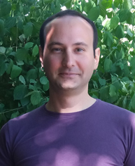

I am a data scientist and a political psychologist. Psychometrics, psycholinguistics, modeling subjectivity, and comparative politics are among my research interests.
I serve as the Turkish Language Group Leader in the European Commission Joint Research Centre’s ValuesML - Unravelling Expressed Values in the Media for Informed Policy Making project. I am an affiliated postdoc fellow at Bremen International School of Social Sciences, Constructor University. Before this, I was a postdoc fellow at the Psychology & Methods department in a project funded by Business Finland and Hofstede Insights. At the University of Oldenburg, I worked as the interim academic coordinator of European Master in Migration & Intercultural Relations, also as a lecturer at the Institute of Social Sciences.
What’s new?
15/06/2022: Blog post – What
do political psychologists study?
23/04/2022: Blog post – Coauthor
network analysis of political psychologists
09/01/2022: Blog post – What
was the highlight of my Ph.D. work?
13/12/2021: Manuscript with Öney is
published in Democratization. Replication material and
pre-print are here
29/07/2021: Blog post – Psychological
profiles and socio-demographics …
08/03/2021: Blog post – Visualizing
vDEM democracy scores using plotly…
01/02/2021: Manuscript with Mole and Golec de Zavala is published in the European Journal of Sociology; replication
material are available here; early view is here.
08/01/2021:
Article with Öney is published in the Turkish Studies journal; accepted version
of the manuscript, supplementary info, and replication syntax are
available here;
early view is available here.
02/07/2020:
Article with Ponizovskiy, Grigoryan, Boyd, Dobewall & Holtz is published in the European Journal of Personality;
supplementary information, and replication material are here. Open access view
is here.
25/06/2020: Manuscript with Thomeczek is accepted
to Journal of Theoretical Social Psychology’s
special issue: Unpacking the social psychology of populism. Accepted
manuscript, supplementary information, and replication material are here. Early view will
be available here in fall 2020.
29/04/2020: Press-release of OCPD – English
version is here; German version is here
26/04/2020:
Blog post – An
informal benchmarking within psychometrics: attitude network approach
vs. the general SEM framework using German national identity as an
example
12/02/2020: At the end of
2019, together with Henrik Dobewall, Peter Holtz, Klaus Boehnke & Michael Schachner, we received funding from Business
Finland on behalf of Hofstede Insights to develop an instrument that
measures organizational culture with text data.
02/12/2019: Blog post on the ultra-short
version of Collective Narcissism Scale for the Prejudice Lab
at Goldsmiths, University of London. Pdf version here; HTML version here.
15/10/2019: Article published with Castanho Silva,
Thomeczek, Bandlow-Raffalski, Littvay. Online
first version here, replication material here and here.
09/06/2019: Blog post – Juxtaposing
psychometrics, topic modeling, and social network analysis to model
competing nationalist discourses
16/04/2019: Blog post – semtree
vs. networktree
02/04/2019: Website
moved to GitHub